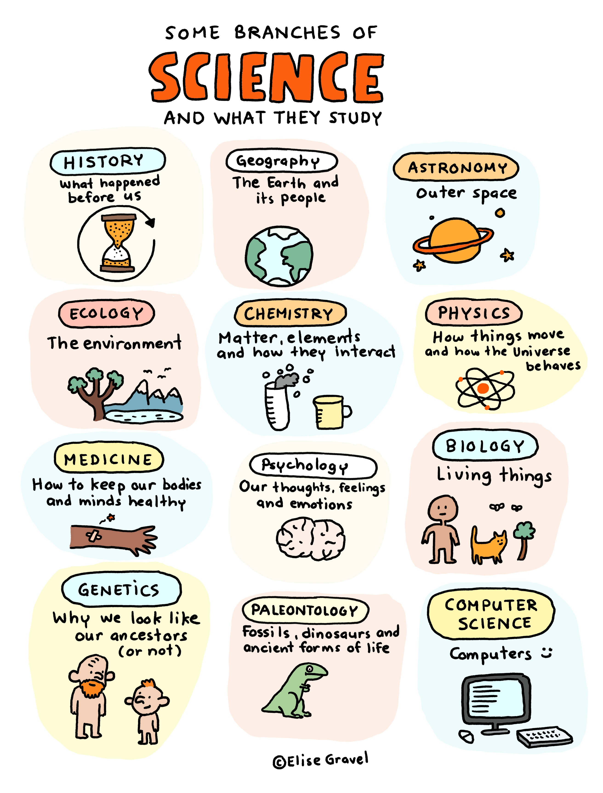

Science as a distinctive enterprise is arguably the unique contribution of
western thought to all the world’s other cultures which it has touched.
As such, understanding science is crucial to our understanding of our civilization as a whole.
Science
Science (from Latin scientia 'knowledge') is a systematic enterprise that builds and organizes knowledge
in the form of testable explanations and predictions about the universe.
The earliest roots of science can be traced to Ancient Egypt and Mesopotamia in around 3000 to 1200 BCE. Their
contributions to mathematics, astronomy, and medicine entered and shaped Greek natural philosophy of classical
antiquity, whereby formal attempts were made to provide explanations of events in the physical world based on
natural causes. After the fall of the Western Roman Empire, knowledge of Greek conceptions of the world deteriorated
in Western Europe during the early centuries (400 to 1000 CE) of the Middle Ages, but was preserved in the Muslim world
during the Islamic Golden Age. The recovery and assimilation of Greek works and Islamic inquiries into Western Europe
from the 10th to 13th century revived "natural philosophy", which was later transformed by the Scientific Revolution
[1] that began in the 16th century as new ideas and discoveries departed from
previous Greek conceptions and traditions. The scientific method[2] soon played
a greater role in knowledge creation.
BRANCHES OF SCIENCE
Modern science is typically divided into three major branches.
the natural sciences - which study nature in the broadest sense
e.g. biology, chemistry and physics
the social sciences - which study individuals and societies
e.g. economics, psychology, and sociology
the formal sciences - which deal with symbols governed by rules
e.g. logic, mathematics, and theoretical computer science
Disciplines that use existing scientific knowledge for practical purposes, such as engineering and medicine, are
described as applied sciences.

Whether we like it or not, science seems to be the only universally welcome
contribution of European civilization to all the rest of the world.
Meanings and Notes
scientific revolution - It was a series of events that marked the emergence of modern
science during the early modern period, when developments in mathematics, physics, astronomy, biology (including human
anatomy) and chemistry transformed the views of society about nature. The Scientific Revolution took
place in Europe towards the end of the Renaissance period and continued through the late 18th century, scientific method -